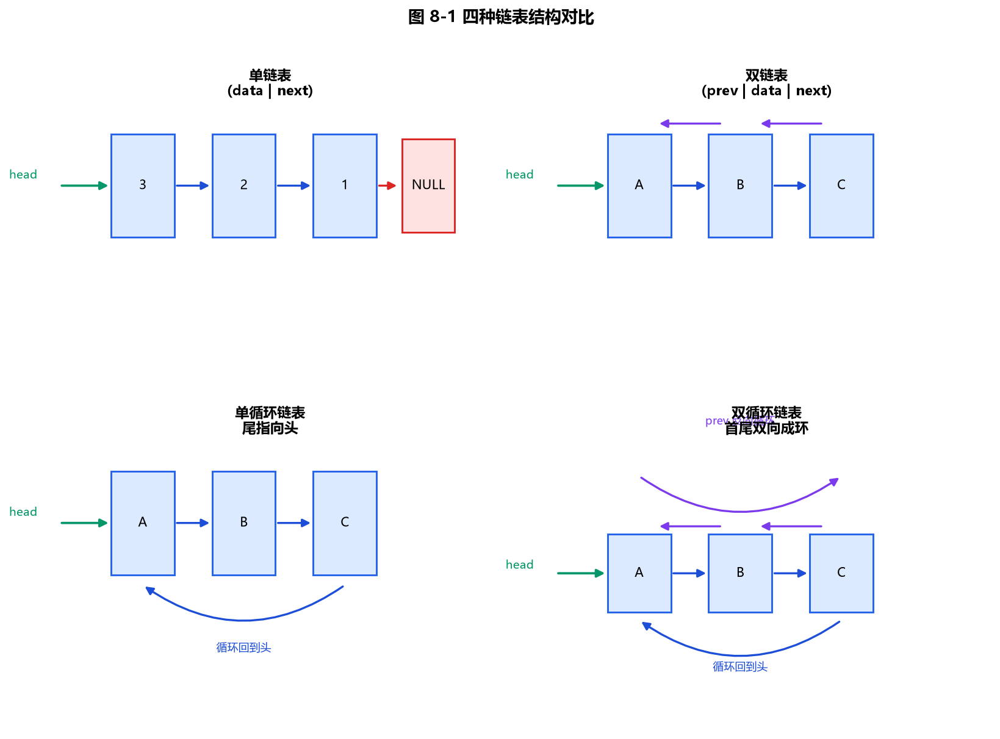
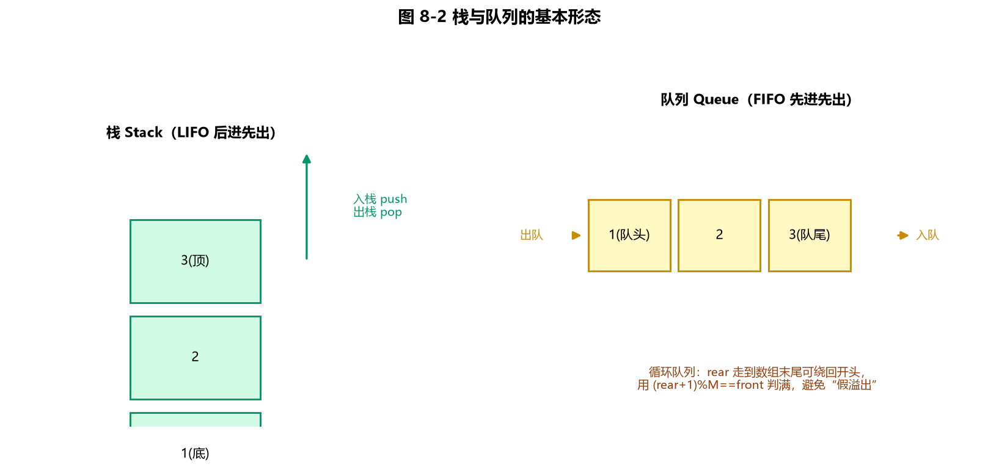
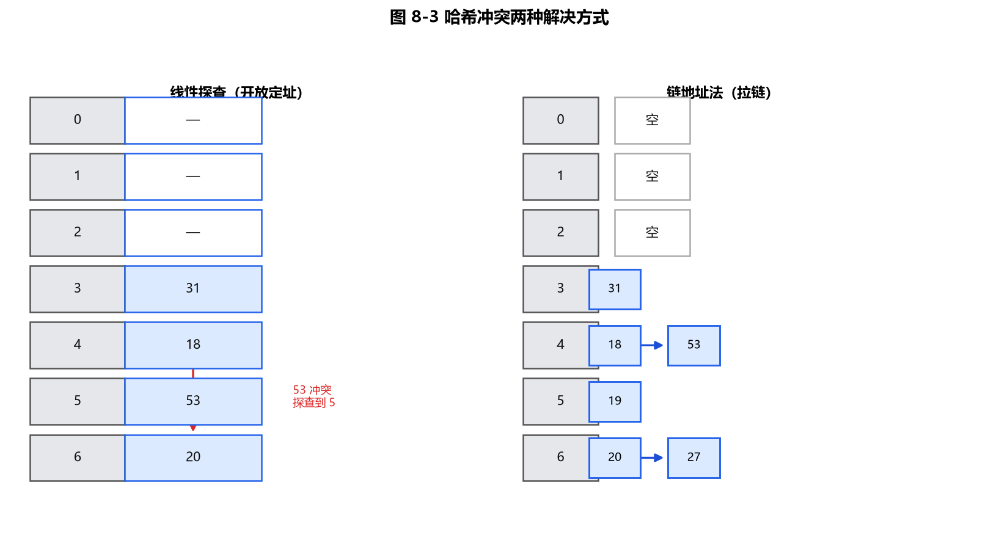

第8章 线性数据结构
线性数据结构是 CSP-S 复赛与初赛的共同核心：数组、链表、栈、队列、哈希表、字符串。复赛中栈（递归/表达式/DFS）、队列（BFS）、哈希表（判重/计数）、字符串（模式/前缀）几乎每场必考；初赛则偏好考"概念辨析 + 计算"（哈希冲突、子串数、出栈序列、复杂度）。
本章把每个知识点都写成 C++17 示例，并把 15 道经典初赛选择题整理为随堂检测（每题附可展开解析）。
8.1 数组与顺序表
数组在内存中连续存放，支持随机访问（按下标 O(1) 取元素），但插入/删除需移动元素（最坏 O(n)）。
| 操作 | 数组/顺序表 | 说明 |
|---|---|---|
| 按下标访问 | O(1) | 连续存储，可随机访问 |
| 头部插入/删除 | O(n) | 需整体后移/前移 |
| 尾部插入（均摊） | O(1) | vector 倍增均摊 |
| 查找指定值 | O(n) | 无序时只能顺序查找 |
8.1.1 顺序表插入（教学示例）
#include <iostream>
#include <vector>
using namespace std;
// 在顺序表 a 的下标 p 处插入 x（p 从 0 计），元素后移 O(n)
void insertAt(vector<int>& a, int p, int x) {
a.insert(a.begin() + p, x);
}
int main() {
vector<int> a = {1, 2, 3, 4};
insertAt(a, 2, 99); // 在下标 2 插 99
for (int v : a) cout << v << " "; // 1 2 99 3 4
cout << "\n";
return 0;
}
8.1.2 多维数组的存储（教学示例）
多维数组按行优先（C/C++）或列优先（Fortran）线性存放。行优先下一维 a[i][j]（共 cols 列）相对首地址偏移为 i * cols + j。
#include <iostream>
using namespace std;
int main() {
const int rows = 3, cols = 4;
int a[rows][cols] = {{1,2,3,4},{5,6,7,8},{9,10,11,12}};
// 行优先：a[i][j] 地址偏移 = i*cols + j
int i = 2, j = 1;
cout << "a[" << i << "][" << j << "] = " << a[i][j] << " 偏移=" << (i*cols + j) << "\n"; // 10, 偏移 9
return 0;
}
8.1.3 顺序表按位置删除（教学示例）
在顺序表下标 p 处删除元素，后继元素前移（最坏 O(n)），与 8.1.1 的插入对称。
#include <iostream>
#include <vector>
using namespace std;
// 删除顺序表 a 下标 p 处的元素（p 从 0 计），后继前移 O(n)
void eraseAt(vector<int>& a, int p) {
a.erase(a.begin() + p);
}
int main() {
vector<int> a = {1, 2, 99, 3, 4};
eraseAt(a, 2); // 删除下标 2 的 99
for (int v : a) cout << v << " "; // 1 2 3 4
cout << "\n";
return 0;
}
8.2 链表
链表结点通过指针串接，内存不必连续。按结构分为四类，核心区别在"指针方向与数量"：
| 类型 | 指针结构 | 能否向前遍历 | 是否成环 | 典型用途 |
|---|---|---|---|---|
| 单链表 | 每结点 1 个 next | 否 | 否 | 通用、栈/队列底层 |
| 双链表 | 每结点 prev+next | 是 | 否 | LRU、邻接表 |
| 单循环链表 | next 且尾指向头 | 否 | 是 | 约瑟夫环、轮询 |
| 双循环链表 | 双向且成环（常带哨兵） | 是 | 是 | 高效插入删除 |
共同点：插入/删除（已知前驱）
O(1)，不能随机访问（查第 k 个需O(k)遍历）。内存地址连续不连续均可。

图 8-1：单/双/单循环/双循环链表的指针结构差异。蓝色箭头为 next，紫色箭头为 prev，绿色箭头为 head。
8.2.1 单链表（插入与删除）
单链表每结点一个 next，头结点为空表示表空。插入/删除已知前驱时 O(1)，但定位前驱需先遍历。
（1）头插建表 + 按值删除（用哨兵简化边界）
#include <iostream>
using namespace std;
struct Node { int v; Node* next; Node(int x): v(x), next(nullptr) {} };
// 头插法建表（结果逆序），O(1)
Node* pushFront(Node* head, int x) {
Node* p = new Node(x); p->next = head; return p;
}
// 删除第一个值为 x 的结点，返回新头（用哨兵简化边界）
Node* removeVal(Node* head, int x) {
Node* dummy = new Node(0); dummy->next = head;
Node* pre = dummy;
while (pre->next) {
if (pre->next->v == x) { Node* t = pre->next; pre->next = t->next; delete t; break; }
pre = pre->next;
}
Node* nh = dummy->next; delete dummy; return nh;
}
int main() {
Node* h = nullptr;
for (int x : {3, 2, 1}) h = pushFront(h, x); // 1 -> 2 -> 3
h = removeVal(h, 2); // 1 -> 3
for (Node* p = h; p; p = p->next) cout << p->v << " ";
cout << "\n";
return 0;
}
（2）按位置插入 + 按位置删除（先遍历到目标前一个结点，再改指针）
#include <iostream>
using namespace std;
struct Node { int v; Node* next; Node(int x): v(x), next(nullptr) {} };
// 在第 pos 个位置（0-based）插入 x，返回新头
Node* insertAt(Node* head, int pos, int x) {
Node* dummy = new Node(0); dummy->next = head;
Node* pre = dummy;
for (int i = 0; i < pos; ++i) pre = pre->next; // 走到 pos-1
Node* p = new Node(x); p->next = pre->next; pre->next = p;
Node* nh = dummy->next; delete dummy; return nh;
}
// 删除第 pos 个位置（0-based）结点，返回新头
Node* deleteAt(Node* head, int pos) {
Node* dummy = new Node(0); dummy->next = head;
Node* pre = dummy;
for (int i = 0; i < pos; ++i) pre = pre->next;
Node* t = pre->next; pre->next = t->next; delete t;
Node* nh = dummy->next; delete dummy; return nh;
}
int main() {
Node* h = new Node(1); h->next = new Node(3); // 1 -> 3
h = insertAt(h, 1, 2); // 下标 1 插入 2：1 -> 2 -> 3
h = deleteAt(h, 0); // 删下标 0 的 1：2 -> 3
for (Node* p = h; p; p = p->next) cout << p->v << " ";
cout << "\n";
return 0;
}
8.2.2 双链表（在 p 后插入 + 删除）
双链表每结点多一个 prev，可向前遍历，插入/删除已知结点时 O(1) 且不需找前驱。
#include <iostream>
using namespace std;
struct DNode { int v; DNode *prev, *next; DNode(int x): v(x), prev(nullptr), next(nullptr) {} };
// 在 p 之后插入新结点，注意维护两端指针
void insertAfter(DNode* p, int x) {
DNode* q = new DNode(x);
q->next = p->next; q->prev = p;
if (p->next) p->next->prev = q;
p->next = q;
}
// 删除结点 p（返回 p->next 便于继续遍历）
DNode* eraseNode(DNode* p) {
DNode* nxt = p->next;
if (p->prev) p->prev->next = p->next;
if (p->next) p->next->prev = p->prev;
delete p; return nxt;
}
int main() {
DNode* a = new DNode(1); DNode* b = new DNode(2);
a->next = b; b->prev = a; // 1 <-> 2
insertAfter(a, 99); // 1 <-> 99 <-> 2
for (DNode* p = a; p; p = p->next) cout << p->v << " ";
cout << "\n";
return 0;
}
头插与头删（在表头增删，均 O(1)），是对上方"在 p 后插入 / 删除任意结点"的补充：
#include <iostream>
using namespace std;
struct DNode { int v; DNode *prev, *next; DNode(int x): v(x), prev(nullptr), next(nullptr) {} };
// 在表头插入 x，返回新头
DNode* insertHead(DNode* head, int x) {
DNode* p = new DNode(x);
p->next = head;
if (head) head->prev = p;
return p;
}
// 删除表头结点，返回新头
DNode* deleteHead(DNode* head) {
if (!head) return nullptr;
DNode* nh = head->next;
if (nh) nh->prev = nullptr;
delete head; return nh;
}
int main() {
DNode* h = nullptr;
h = insertHead(h, 1); h = insertHead(h, 2); // 2 <-> 1
h = deleteHead(h); // 删表头 -> 1
cout << "头=" << h->v << "\n"; // 1
return 0;
}
8.2.3 单循环链表（约瑟夫环）
尾结点的 next 指向头，形成环。约瑟夫问题是经典应用：n 人围成圈，每次数到 m 出列，求最后幸存者。
#include <iostream>
using namespace std;
struct Node { int v; Node* next; Node(int x): v(x), next(nullptr) {} };
// 约瑟夫问题：n 人编号 1..n，每次数到 m 出列，返回幸存者编号
int josephus(int n, int m) {
Node* head = new Node(1); Node* cur = head;
for (int i = 2; i <= n; ++i) { cur->next = new Node(i); cur = cur->next; }
cur->next = head; // 成环（cur 停在最后一个结点）
while (cur->next != cur) {
for (int i = 1; i < m; ++i) cur = cur->next; // 数 m-1 步
Node* dead = cur->next; // 第 m 个出列
cur->next = dead->next; delete dead;
}
int ans = cur->v; delete cur; return ans;
}
int main() {
cout << "n=5,m=2 幸存者 = " << josephus(5, 2) << "\n"; // 3
return 0;
}
普通单循环链表的插入/删除与单链表类似，区别在于遍历终止条件为"回到头结点"。下面给出"在 p 后插入"与"删除 p 的后继"两个基本操作（建环见约瑟夫环示例）：
#include <iostream>
using namespace std;
struct Node { int v; Node* next; Node(int x): v(x), next(nullptr) {} };
// 在单循环链表结点 p 之后插入 x（不破坏环）
void insertAfter(Node* p, int x) {
Node* q = new Node(x);
q->next = p->next; p->next = q;
}
// 删除 p 的后继结点（保持环不断），返回被删结点值
int removeNext(Node* p) {
Node* t = p->next;
p->next = t->next;
int v = t->v; delete t; return v;
}
int main() {
Node* a = new Node(1); a->next = a; // 自环：1 -> 1
insertAfter(a, 2); // 1 -> 2 -> 1（成环）
insertAfter(a, 3); // 1 -> 3 -> 2 -> 1
cout << "删掉 a 的后继(=1 后面是 3)："; // 输出 3
cout << removeNext(a) << "\n";
for (Node* p = a->next; p != a; p = p->next) cout << p->v << " "; // 2
cout << "\n";
return 0;
}
8.2.4 双循环链表（带哨兵头结点）
用**哨兵（sentinel）**结点自身成环，可使插入/删除在表头、表尾、中间都走同一套代码，无需判空。
#include <iostream>
using namespace std;
struct DNode { int v; DNode *prev, *next; DNode(int x = 0): v(x), prev(this), next(this) {} };
// 哨兵 s 的双循环链表：在哨兵后（即表头）插入
void insertHead(DNode* s, int x) {
DNode* p = new DNode(x);
p->next = s->next; p->prev = s;
s->next->prev = p; s->next = p;
}
void removeNode(DNode* p) {
p->prev->next = p->next; p->next->prev = p->prev; delete p;
}
int main() {
DNode* s = new DNode(); // 哨兵自身成环
insertHead(s, 1); insertHead(s, 2); insertHead(s, 3); // s -> 3 -> 2 -> 1 -> s
for (DNode* p = s->next; p != s; p = p->next) cout << p->v << " ";
cout << "\n";
return 0;
}
8.3 栈（后进先出 LIFO）
栈只在栈顶压入（push）和弹出（pop），遵循后进先出。常见用途：函数调用（递归）、表达式求值、DFS、括号匹配、单调栈。

图 8-2：栈是 LIFO，push/pop 在同一端；队列是 FIFO，入队从队尾、出队从队头；循环队列把数组逻辑上首尾相接，避免假溢出。
8.3.1 顺序栈（数组实现）
用数组 + top 指针实现，空栈 top == 0，满栈 top == 容量。
#include <iostream>
using namespace std;
const int N = 100;
int st[N], top = 0; // top = 已存元素个数
void push(int x) { st[top++] = x; }
void pop() { --top; }
int peek() { return st[top - 1]; }
bool empty() { return top == 0; }
int main() {
push(10); push(20);
cout << peek() << "\n"; // 20
pop();
cout << peek() << "\n"; // 10
return 0;
}
8.3.2 链栈
用单链表实现栈，栈顶即表头，无需预设容量（不会"上溢"），push/pop 均为 O(1)。
#include <iostream>
using namespace std;
struct Node { int v; Node* next; Node(int x): v(x), next(nullptr) {} };
Node* top = nullptr;
void push(int x) { Node* p = new Node(x); p->next = top; top = p; }
void pop() { if (top) { Node* t = top; top = top->next; delete t; } }
int peek() { return top->v; }
bool empty() { return top == nullptr; }
int main() {
push(1); push(2); push(3);
cout << "栈顶=" << peek() << "\n"; // 3
return 0;
}
8.3.3 应用：括号匹配（教学示例）
遇到左括号入栈，遇到右括号则必须与栈顶左括号同型且栈非空，最后栈须空。
#include <iostream>
#include <stack>
#include <string>
using namespace std;
bool match(const string& s) {
stack<char> st;
for (char c : s) {
if (c == '(' || c == '[' || c == '{') st.push(c);
else {
if (st.empty()) return false;
char t = st.top(); st.pop();
if ((c == ')' && t != '(') || (c == ']' && t != '[') || (c == '}' && t != '{')) return false;
}
}
return st.empty();
}
int main() {
cout << "({[]}) 匹配? " << (match("({[]})") ? "是" : "否") << "\n"; // 是
cout << "([)] 匹配? " << (match("([)]") ? "是" : "否") << "\n"; // 否
return 0;
}
8.3.4 合法出栈序列判定（教学示例）
给定入栈序列 0..n-1，判断某出栈序列是否合法：用栈模拟，栈顶等于下一个要弹出的元素就弹出，否则把入栈序列下一个数压栈。
#include <iostream>
#include <vector>
#include <stack>
using namespace std;
bool validPop(const vector<int>& a) {
int n = a.size();
stack<int> st; int j = 0;
for (int i = 0; i < n; ++i) {
st.push(i);
while (!st.empty() && st.top() == a[j]) { st.pop(); ++j; }
}
return st.empty();
}
int main() {
cout << "1 2 3 合法? " << (validPop({1,2,3}) ? "是" : "否") << "\n"; // 是
cout << "3 1 2 合法? " << (validPop({3,1,2}) ? "是" : "否") << "\n"; // 否
return 0;
}
8.3.5 栈容量计算（教学示例）
元素依次入栈 S、出栈即进队列 Q，给定出队顺序可反推入/出栈过程并求栈的最大深度（最小容量）：
#include <iostream>
#include <vector>
#include <stack>
using namespace std;
// q: 出队顺序（=出栈顺序）。返回所需最小栈容量
int minStackCap(const vector<int>& q) {
int n = q.size();
vector<int> in(n); for (int i = 0; i < n; ++i) in[i] = i + 1;
stack<int> st; int idx = 0, cap = 0;
for (int k = 0; k < n; ++k) {
while (idx < n && (st.empty() || st.top() != q[k])) {
st.push(in[idx]); ++idx; cap = max(cap, (int)st.size());
}
st.pop();
}
return cap;
}
int main() {
// 出队 e2 e4 e3 e6 e5 e1（编号 1..6），最小容量 = 3
cout << "最小栈容量 = " << minStackCap({2,4,3,6,5,1}) << "\n"; // 3
return 0;
}
8.3.6 应用：后缀表达式求值（洛谷 P1449）
中缀表达式转后缀（逆波兰）后用栈求值，是栈的经典应用。
#include <iostream>
#include <stack>
#include <string>
#include <sstream>
using namespace std;
// 计算后缀（逆波兰）表达式，操作数/运算符空格分隔；'@' 结尾（P1449 风格）
int evalRPN(const string& expr) {
stack<int> st; stringstream ss(expr); string tok;
while (ss >> tok) {
if (tok == "@") break;
if (tok == "+" || tok == "-" || tok == "*" || tok == "/") {
int b = st.top(); st.pop();
int a = st.top(); st.pop();
if (tok == "+") st.push(a + b);
else if (tok == "-") st.push(a - b);
else if (tok == "*") st.push(a * b);
else st.push(a / b);
} else st.push(stoi(tok));
}
return st.top();
}
int main() {
cout << "3 4 + 2 * = " << evalRPN("3 4 + 2 * @") << "\n"; // (3+4)*2 = 14
return 0;
}
8.4 队列（先进先出 FIFO）
队列在队尾入、队头出，遵循先进先出，常见用途：BFS、缓冲区、任务调度、单调队列。
8.4.1 顺序队列的"假溢出"与循环队列
普通数组队列：出队后前面空位无法再用（假溢出）。解决办法是循环队列：front/rear 在到达末尾时回到 0，判满用 (rear+1) % M == front（牺牲一个单元区分空/满）。
#include <iostream>
using namespace std;
const int M = 5; // 循环队列容量（实际可用 M-1 个）
int q[M], front = 0, rear = 0; // 空：front==rear
bool full() { return (rear + 1) % M == front; }
void enqueue(int x) { q[rear] = x; rear = (rear + 1) % M; }
int dequeue() { int v = q[front]; front = (front + 1) % M; return v; }
int qsize() { return (rear - front + M) % M; }
int main() {
enqueue(1); enqueue(2); enqueue(3);
cout << "size=" << qsize() << " 出队=" << dequeue() << "\n"; // size=3 出队=1
return 0;
}
8.4.2 链队列
用链表实现队列，头删尾插，无需预设容量，入队/出队均 O(1)。
#include <iostream>
using namespace std;
struct Node { int v; Node* next; Node(int x): v(x), next(nullptr) {} };
Node *head = nullptr, *tail = nullptr;
void enqueue(int x) {
Node* p = new Node(x);
if (!tail) head = tail = p; else { tail->next = p; tail = p; }
}
int dequeue() { int v = head->v; Node* t = head; head = head->next; if (!head) tail = nullptr; delete t; return v; }
int main() {
enqueue(10); enqueue(20);
cout << "出队=" << dequeue() << " 再出队=" << dequeue() << "\n"; // 10 20
return 0;
}
8.4.3 STL 队列与双端队列（教学示例）
std::queue 是适配器（默认基于 deque）；std::deque 支持两端高效插入删除，是单调队列的基础。
#include <iostream>
#include <queue>
#include <deque>
#include <vector>
using namespace std;
int main() {
queue<int> q; q.push(10); q.push(20); q.push(30);
cout << "队头=" << q.front() << "\n"; // 10（FIFO）
q.pop(); cout << "出队后队头=" << q.front() << "\n"; // 20
// deque 双端队列：两端都可 push/pop
deque<int> d; d.push_back(1); d.push_front(0);
cout << " deque 头=" << d.front() << " 尾=" << d.back() << "\n"; // 0 1
return 0;
}
8.4.4 应用：单调队列（滑动窗口最大值）
单调队列在 O(n) 内求滑动窗口最值（洛谷 P1886 滑动窗口），是队列的高级应用。
#include <iostream>
#include <deque>
#include <vector>
using namespace std;
// 滑动窗口（大小 k）最大值：维护递减 deque，存下标
vector<int> slideMax(const vector<int>& a, int k) {
deque<int> dq; vector<int> ans;
for (int i = 0; i < (int)a.size(); ++i) {
while (!dq.empty() && a[dq.back()] <= a[i]) dq.pop_back();
dq.push_back(i);
if (dq.front() == i - k) dq.pop_front(); // 移出窗口
if (i >= k - 1) ans.push_back(a[dq.front()]);
}
return ans;
}
int main() {
vector<int> a = {1, 3, -1, -3, 5, 3, 6, 7};
for (int v : slideMax(a, 3)) cout << v << " "; // 3 3 5 5 6 7
cout << "\n";
return 0;
}
8.5 哈希表
哈希表通过哈希函数 H(key) 把关键字映射到数组下标，理想查找 O(1)。冲突不可避免，需用冲突解决策略。

图 8-3：线性探查把冲突元素顺次后移（可能产生“聚集”）；链地址法把同桶元素挂在链表里，删除方便且不聚集。
8.5.1 哈希函数与线性探查（开放寻址）
H(key) = key % M。线性探查：冲突时向后找第一个空位（到末尾再从 0 循环）。
#include <iostream>
#include <vector>
using namespace std;
// 线性探查插入；返回 key 最终落点（表大小 M，初始全 -1 表示空）
int linearProbe(vector<int>& tbl, int key, int M) {
int h = key % M;
while (tbl[h] != -1 && tbl[h] != key) h = (h + 1) % M;
tbl[h] = key;
return h;
}
int main() {
const int M = 13;
vector<int> tbl(M, -1);
for (int k : {2, 8, 31, 20, 19, 18, 53, 27}) linearProbe(tbl, k, M);
// 18: H=18%13=5 被 31 占 -> 6(20) -> 7(19) -> 8(8) -> 9 空，落入 9
cout << "18 落在地址 " << linearProbe(tbl, 18, M) << "\n"; // 9
return 0;
}
8.5.2 链地址法（拉链法）
每个桶挂一条链表，冲突的元素都挂在同一桶下；插入/删除 O(1) 期望，且不会因冲突退化成聚集。
#include <iostream>
#include <vector>
#include <list>
using namespace std;
const int M = 13;
vector<list<int>> tbl(M);
void insert(int key) { tbl[key % M].push_back(key); } // 同桶挂链表
bool find(int key) {
for (int v : tbl[key % M]) if (v == key) return true;
return false;
}
// 链地址法删除：在对应桶链表中移除 key（期望 O(1)）
void erase(int key) {
auto& bucket = tbl[key % M];
for (auto it = bucket.begin(); it != bucket.end(); ++it)
if (*it == key) { bucket.erase(it); break; }
}
int main() {
for (int k : {2, 8, 31, 20, 19, 18, 53, 27}) insert(k);
cout << "查找 18? " << (find(18) ? "命中" : "未命中") << "\n"; // 命中
erase(18);
cout << "删除后查找 18? " << (find(18) ? "命中" : "未命中") << "\n"; // 未命中
return 0;
}
8.5.3 无冲突哈希函数（教学示例）
判断给定哈希函数对一组 key 是否产生冲突：若所有 H(key) 互不相同则无冲突。
#include <iostream>
#include <vector>
#include <set>
using namespace std;
bool noConflict(const vector<int>& keys, int (*h)(int)) {
set<int> seen;
for (int x : keys) {
int v = h(x);
if (seen.count(v)) return false;
seen.insert(v);
}
return true;
}
int mod11(int x) { return x % 11; }
int pow2mod11(int x) { int r = 1; for (int i = 0; i < x; ++i) r = (r * 2) % 11; return r; }
int sqrtmod11(int x) { int r = 0; while (r * r <= x) ++r; return (r - 1) % 11; }
int main() {
vector<int> keys = {2, 6, 10, 17};
cout << "x%11 无冲突? " << (noConflict(keys, mod11) ? "是" : "否") << "\n"; // 否
cout << "2^x mod 11 无冲突? " << (noConflict(keys, pow2mod11) ? "是" : "否") << "\n"; // 是
cout << "floor(sqrt)mod11? " << (noConflict(keys, sqrtmod11) ? "是" : "否") << "\n"; // 是
return 0;
}
经典初赛【多选】：对
(2,6,10,17)存入地址区间0~10，h(x)=2ˣ mod 11与h(x)=⌊√x⌋ mod 11不产生冲突，答案为 C、D。
8.6 字符串
字符串是特殊的线性表（元素为字符），长度可为零（空串 ""）；空格串不是空串。子串、相邻交换、模式匹配是初赛/复赛常考。
8.6.1 非空子串计数（教学示例）
长度为 n 的字符串，非空子串数 = n(n+1)/2（起点有 n 种、长度从 1 到 n）。
#include <iostream>
#include <string>
using namespace std;
long long subCount(const string& s) {
long long n = s.size();
return n * (n + 1) / 2;
}
int main() {
string s = "Olympic"; // 长度 7
cout << "\"" << s << "\" 非空子串数 = " << subCount(s) << "\n"; // 7*8/2 = 28
return 0;
}
8.6.2 相邻交换最少次数 = 逆序对（教学示例）
把串 DACFEB 变成 ABCDEF，每次交换相邻两字符。最少交换次数 = 目标排列相对原串的逆序对数。
#include <iostream>
#include <string>
#include <map>
using namespace std;
int minAdjSwap(const string& src, const string& tgt) {
map<char,int> pos;
for (int i = 0; i < (int)tgt.size(); ++i) pos[tgt[i]] = i;
int inv = 0;
for (int i = 0; i < (int)src.size(); ++i)
for (int j = i + 1; j < (int)src.size(); ++j)
if (pos[src[i]] > pos[src[j]]) ++inv;
return inv;
}
int main() {
cout << "DACFEB -> ABCDEF 最少交换 = " << minAdjSwap("DACFEB", "ABCDEF") << "\n"; // 7
return 0;
}
8.6.3 字符串哈希（BKDR，教学示例）
把字符串映射为大整数（模大质数），可在 O(1) 比较两子串是否相同，是 Rabin-Karp、字符串判重的基础。
#include <iostream>
#include <string>
using namespace std;
const unsigned long long BASE = 131, MOD = 1000000007;
unsigned long long strHash(const string& s) {
unsigned long long h = 0;
for (char c : s) h = (h * BASE + c) % MOD;
return h;
}
int main() {
cout << "abc 哈希 = " << strHash("abc") << "\n";
cout << "abc == abd? " << (strHash("abc") == strHash("abd") ? "同" : "不同") << "\n"; // 不同
return 0;
}
8.6.4 KMP 模式匹配（next 数组，教学示例）
KMP 用 next 数组（最长真前缀=真后缀长度）在失配时跳过不可能匹配的位置，主串不回退，复杂度 O(n+m)。
#include <iostream>
#include <vector>
#include <string>
using namespace std;
// 计算 KMP 的 next 数组：next[i] = 模式 p[0..i] 最长真前缀=真后缀的长度
vector<int> buildNext(const string& p) {
int m = p.size(); vector<int> nx(m, 0);
for (int i = 1, j = 0; i < m; ++i) {
while (j > 0 && p[i] != p[j]) j = nx[j - 1];
if (p[i] == p[j]) ++j;
nx[i] = j;
}
return nx;
}
int main() {
auto nx = buildNext("ABABC");
for (int v : nx) cout << v << " "; // 0 0 1 2 0
cout << "\n";
return 0;
}
8.7 综合：栈实现表达式求值（逆波兰）
中缀表达式转后缀（逆波兰）后用栈求值，是栈的经典综合应用（见 8.3.6 示例）。要点：
- 中缀转后缀：用栈存运算符，按优先级（先
*/后+-）和括号决定输出顺序。 - 后缀求值：遇数压栈，遇运算符取栈顶两操作数计算（注意被除数/减数顺序）。
8.8 本章小结
- 数组/顺序表：连续存储、随机访问
O(1)、插入删除O(n)；多维数组行优先偏移i*cols+j。 - 链表四类：单链表（1 个 next）、双链表（prev+next，可前移）、单循环（尾指头，约瑟夫环）、双循环（常带哨兵，插入删除统一）。均不能随机访问（最坏查询
O(n)）。 - 栈 LIFO：顺序栈（数组+top）、链栈（无容量限制）；应用：括号匹配、表达式求值、DFS、单调栈；合法出栈序列用模拟判定。
- 队列 FIFO：循环队列（
(rear+1)%M==front判满）解决假溢出；链队列无容量限制；deque双端队列支撑单调队列（滑动窗口最值O(n)）；应用：BFS。 - 哈希表：
H(key)=key%M；冲突用线性探查（开放寻址，会聚集）或链地址法（拉链，不退化）；理想查找O(1)。 - 字符串：特殊线性表，长度可为 0；非空子串数
n(n+1)/2；相邻交换最少次数 = 逆序对；字符串哈希用于快速比较；KMPO(n+m)模式匹配。
随堂检测（CSP-S 初赛风格）
-
（单选）哈希表地址
0~12，H(key)=key%13，线性探查，序列(2,8,31,20,19,18,53,27)中18应放在（ ）- A. 5
- B. 9
- C. 4
- D. 0
参考答案
B. 9。
解析（考点）：
18%13=5，但 5 已被31%13=5占用；线性探查依次后移：6(=20)、7(=19)、8(=8) 均占，9 空，故落入 9。 -
（单选）哈希表初始空，地址
0~9，h(x)=x%10，线性探查（到 9 后回 0）。依次存(71,23,73,99,44,79,89)，89存在地址（ ）- A. 9
- B. 0
- C. 1
- D. 2
参考答案
D. 2。
解析（考点）：先算落点：
71%10=1,23=3,73=3→4,99=9,44=4→5,79=9→0,89=9→0→1→2（1、3、4、9、5、0 已占），故89落在 2。 -
（单选）字符串
S="Olympic"的非空子串数目是（ ）- A. 29
- B. 28
- C. 16
- D. 17
参考答案
B. 28。
解析（考点）：长度
n=7，非空子串数= n(n+1)/2 = 7×8/2 = 28（按起止位置计，内容相同也计不同）。 -
（单选）关于字符串，正确的是（ ）
- A. 字符串是一种特殊的线性表
- B. 串的长度必须大于零
- C. 字符串不可以用数组表示
- D. 空格字符组成的串就是空串
参考答案
A. 字符串是一种特殊的线性表。
解析（考点）：串是元素为字符的线性表；长度可为 0（空串，B 错）；串可用字符数组存（C 错）；空格串长度大于 0，不是空串（D 错）。
-
（单选）将
DACFEB通过相邻两字符交换变成ABCDEF，最少需要（ ）次- A. 7
- B. 8
- C. 9
- D. 6
参考答案
A. 7。
解析（考点）：最少相邻交换次数 = 目标排列相对原串的逆序对数，对
DACFEB→ABCDEF计算得 7 对逆序。 -
（单选）链表不具有的特点是（ ）
- A. 插入删除不需移动元素
- B. 不必事先估计存储空间
- C. 所需空间与表长成正比
- D. 可随机访问任一元素
参考答案
D. 可随机访问任一元素。
解析（考点）：随机访问是数组的特性；链表靠指针链接，必须顺序遍历，不能随机访问（其余三项都是链表优点）。
-
（单选）含
n个元素的双向链表，查询关键字k最坏时间复杂度是（ ）- A.
O(1) - B.
O(log n) - C.
O(n) - D.
O(n log n)
参考答案
C.
O(n)。解析（考点）：链表只能从头/尾顺序遍历，最坏查遍全表，复杂度
O(n)；O(1)只有哈希表理想查找或已知结点指针时成立。 - A.
-
（单选）线性表采用链表存储，要求内存可用单元地址（ ）
- A. 必须连续
- B. 部分必须连续
- C. 一定不连续
- D. 连续不连续均可
参考答案
D. 连续不连续均可。
解析（考点）：链表通过指针链接，不要求连续存储；数组才要求连续。
-
（单选）入栈顺序
a,b,c,d,e,f,g，下列（ ）不可能是合法出栈序列- A.
a,b,c,d,e,f,g - B.
a,d,c,b,e,g,f - C.
a,d,b,c,g,f,e - D.
g,f,e,d,c,b,a
参考答案
C.
a,d,b,c,g,f,e。解析（考点）：出
a,d后栈内剩b,c；按 LIFO 下一个只能出c或继续压e，不可能先出b再出c（C 中b在c前，非法）；A 为无干扰顺序、B/D 均合法。 - A.
-
（单选）栈
S、队列Q初始空，元素e1..e6依次入S，出栈即入Q；出队顺序为e2,e4,e3,e6,e5,e1，栈S容量至少（ ）- A. 2
- B. 3
- C. 4
- D. 5
参考答案
B. 3。
解析（考点）：模拟入/出栈：为让
e2先出，需先压e1,e2（深度 2）再弹e2；继续压e3,e4弹e4,e3（栈内e1）。过程中栈深峰值 = 3，故最小容量 3。 -
（单选）
(2070)₁₆ + (34)₈的结果不正确的是（ ）- A.
(8332)₁₀ - B.
(208C)₁₆ - C.
(100000000110)₂ - D.
(20214)₈
参考答案
C.
(100000000110)₂。解析（考点）：
2070₁₆ = 8296，34₈ = 28，和 =8324；8324 = 2084₁₆、8324 = 20214₈、二进制应为10000010000100₂。C 的二进制串对不上，故不正确；注意进制互化需逐位核对。 - A.
-
（多选）把
(2,6,10,17)存入地址0~10的哈希表，哈希函数（ ）不产生冲突- A.
x mod 11 - B.
x² mod 11 - C.
2ˣ mod 11 - D.
⌊√x⌋ mod 11
参考答案
C、D。
解析（考点）：A：
2%11=2,6%11=6,10%11=10,17%11=6→ 6 冲突；B：2²=4,6²=36%11=3,10²=100%11=1,17²=289%11=3→ 3 冲突；C/D 映射值互异无冲突。 - A.
-
（多选）入栈
a..g，下列出栈序列不可能出现的有（ ）- A.
a,b,c,e,d,f,g - B.
b,c,a,f,e,g,d - C.
a,e,c,b,d,f,g - D.
g,e,f,d,c,b,a
参考答案
C、D。
解析（考点）：C 出
a,e后栈内b,c,d，下一个必为d或继续压f，不可能先出c再b（违反 LIFO）；D：g最先出说明a..f全在栈内，次出应为f不是e。A、B 均合法。 - A.
-
（单选）用栈求中缀表达式值时，通常先转为（ ）再求值
- A. 前缀表达式
- B. 后缀（逆波兰）表达式
- C. 中序遍历序列
- D. 哈希表
参考答案
B. 后缀（逆波兰）表达式。
解析（考点）：栈实现表达式求值的标准做法：中缀→后缀（逆波兰），再用栈按"遇数压栈、遇运算符取栈顶两操作数计算"求值（见 8.3.6）。
-
（单选）STL
vector尾部插入的均摊时间复杂度是（ ）- A.
O(1) - B.
O(n) - C.
O(log n) - D.
O(n²)
参考答案
A.
O(1)。解析（考点）：vector 满时按 2 倍增容（复制
O(n)），但均摊到每次插入为O(1)；随机访问O(1)，中部插入O(n)。 - A.